Lighting Control in Greenhouses
It all begins with light.
The job of a greenhouse is to provide a structure for growing plants that is transparent to sunlight, yet sufficiently enclosed to reduce convective heat loss (the exchange of air between inside and outside). Some of the solar radiation traveling through the covering material produces heat, and some of it is used for plant photosynthesis, resulting in the production of useful biomass.
What is Light?
Light is a form of electromagnetic radiation that is visible to the human eye. The radiation that we perceive as sunlight, or the visible spectrum, is a small fraction of the total electromagnetic spectrum that includes gamma rays, x-rays, and radio waves. Violet colored light rays at about 380 nm (nanometers) are the shortest wavelengths that humans can perceive in appreciable amounts, and red light wavelengths at about 720 nm are the longest. Solar radiation consists of a vast spectrum of electromagnetic wavelengths at various intensities. Visible light from the sun appears white due to the mixing of wavelengths that our eyes perceive. However, when passed through a prism or a mist of water droplets in the air, light waves become organized or refracted into visible bands of color producing a rainbow effect.
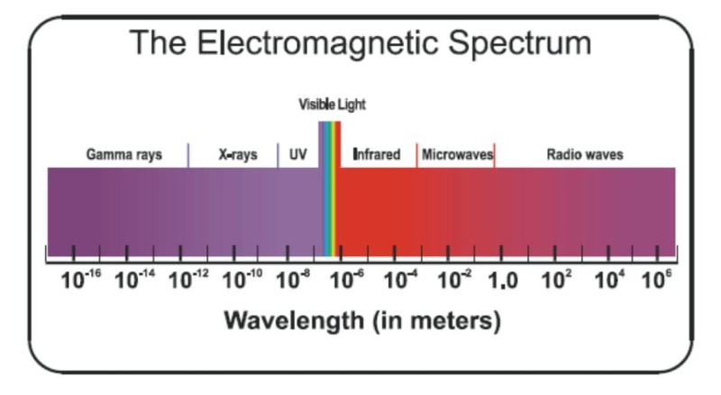
Since human eyes can only perceive a small part of the total emission spectrum, we are largely unaware that objects all around us are continually emitting radiation. As the temperature of an object increases, the spectrum of radiation emitted by it shifts to include shorter wavelengths. Eventually, when sufficient temperatures are achieved, we perceive a ‘glow’ as the emitted radiation shifts into the visible range.
HOW DOES LIGHT AFFECT PLANT GROWTH?
It’s important to remember that humans perceive light differently than plants. We have the strongest response to light in the green/yellow part of the spectrum (about 600nm). For photosynthesis, plants respond strongest to blue and red light, and to red and infra-red light wavelengths for photoperiod growth responses and germination control. The intensity, duration, direction, and spectral quality of light radiation that plants receive has an effect on photosynthesis, flowering, climate response (temperature and water loss), and plant shape (photomorphogenisis).
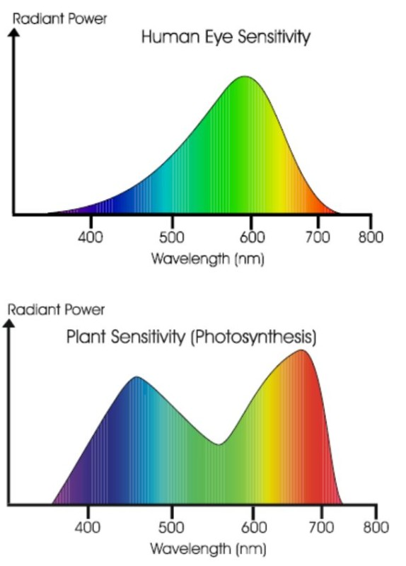
How Does Light Affect Plant Growth
To humans, plants appear largely immobile. Therefore, we tend to regard them as passive organisms, at the mercy of their environment. They are in fact, very active and adaptive in their response to their environment and environmental change. Since natural sunlight is a highly variable phenomenon, plants have evolved mechanisms to measure and cope with the various fluxes and cycles in natural light characteristics. In response to light conditions, they can control their rate of evapotranspiration and water uptake, their internode length, their leaf size, count, orientation, and chloroplast density, as well as determine the optimum timing for flowering and other physiological processes. They can also determine the direction of light, and are able to orient their leaves and growth habit to take optimum advantage of the sun angle. Some seeds require specific light conditions to break dormancy (photodormancy) and germinate.
Greenhouse raised plants often look quite different from genetically identical outdoor specimens. This is due in part to their response to climate differences, including the quantity, quality, and duration of light they receive.
High Intensity Radiation Effects
PHOTOSYNTHESIS
Within the chloroplasts of plant cells, light energy is used to convert atmospheric carbon into carbohydrates in a process called photosynthesis. It takes surprisingly little sunlight, about 80 – 110 watts per square meter to achieve full photosynthetic output on a typical leaf surface in direct light. However, since most growing plants consist of a canopy of leaves in which some of the uppermost ones receive full sun and the rest receive a mixture of direct and reflected light, higher light intensities (often in excess of 500 watts per square meter) help to ensure that all leaves approach their maximum photosynthetic potential.
TEMPERATURE AND WATER LOSS
Less that 5% of the total sunlight energy that a plant receives is used for photosynthesis. For example, most plant leaves appear to be green since they only absorb up to 60% of spectral green light. Under full sunlight conditions, this unused radiation tends to generate potentially damaging heat at the leaf surface. Luckily, plants have a number of strategies for this. They are capable of dissipating heat by several means, including reflection, transmission, convection, radiation, and evaporation. Of these methods, evaporation is the most effective and elegant. Up to 90% of the available sunlight energy is used for evaporation. By evaporating water from their leaves, plants accomplish two things. First, the process of evaporation cools sun-heated surfaces, and second, the upward movement of water needed to replace the water lost through evapotranspiration provides the means of transport for dissolved nutrients entering the plant by way of the roots.
As a rule, the greater the radiation level, the greater the rate of evaporation, although the vapor pressure deficit (humidity level of the air relative to the plant surface) has a contributing effect. However, there is a point under high light conditions, when the plant must evaporate more than it can physically extract from the soil and transport to the leaves. Faced with a potential loss of cell (turgor) pressure the plant must close or partially close its stoma to conserve water and prevent wilting. This effectively shuts off the flow of carbon dioxide and the assembly line of photosynthesis slows down. Beyond this point, increases in light levels and the resulting increase in leaf temperatures can further decrease or stop photosynthetic output, and, if wilting occurs, permanent damage to plant tissues may result.
It is interesting to note that over time, plants can increase their capacity to cope with light related heat stress. They can produce more roots to better extract water for transpiration, and the leaves can change physiologically in their tolerance to strong sunlight. In greenhouses, we often witness this in spring crops, or propagated cuttings raised under low light levels. During the first few days of bright sunshine, crops may wilt, or sustain sun scald injury before they can acclimatize to higher light levels.
Low Intensity Radiation Effects
Plants are capable of detecting more than just the intensity of incoming light. By sensing the duration of the lighting period and the relative intensities of some low intensity wavelengths, many species time their growth phases in concert with the seasons. Plant species are conveniently categorized as day neutral (unresponsive), short day (for flowering), and long day (for flowering). In practice, the photoperiodic response is rather more complicated than these three simple groupings imply, and it is often influenced by other coincidental factors such as physiological maturity, temperature, nutrient availability, and moisture.
PHOTOPERIOD EFFECTS
The photoperiod response in plants is triggered by changes in a protein receptor pigment called phytochrome. The phytochrome molecule can exist in two forms, one that absorbs red light, and another that absorbs far-red light. In the red light phase (r form) the absorption of red light converts it to the far-red form (f form). Once in the far-red form, far red light and metabolic conversion will convert it back to the r form, as will metabolic conversion. The wavelength of light therefore, allows phytochrome to act as a chemical switch. Phytochrome shifts back and forth between states, depending upon which light wavelength predominates (there is more red light during the daytime, and more far-red light at dusk, dawn, and during the night period). This allows plants to ‘sense’ whether it is night or day, and to measure the length of the night period in order to time seasonal processes such as flowering. Since plants are very sensitive to small amounts of red and far red light, artificial manipulation of photoperiod responses can be accomplished using relatively small amounts of artificial light. Ordinary incandescent lights are often used for night break, or long day lighting. They emit sufficient quantities of red light to maintain day length sensitive plants in their long-day physiological state. Similarly, black cloth applications to simulate short days must be sufficient to screen out almost all of the red light (usually below 1 foot-candle).
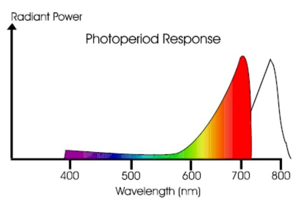
PHOTOMORPHOGENESIS AND PHOTOTROPISM
In addition to the phytochrome dependent photoperiod response, many plants use specific wavelengths and light intensities to properly orient their growth patterns. Photomorphogenesis describes the effect of light upon plant habit and shape, and phototropism describes the ability of plants to orient their parts towards or away from light sources. Recently, the effects of blue wavelengths have been studied in relation to these responses, since the standard high pressure sodium lamps used in greenhouses and growth rooms are somewhat deficient in blue light.
LIGHT MEASUREMENT
As mentioned earlier, light is generally considered to be the portion of the electromagnetic spectrum that humans can perceive with their eyes. Since light is a very complex phenomenon it can’t be measured as easily as air temperature or pressure. Each light source has many characteristics. Light has a specific wavelength or a mixture of wavelengths that can be measured (usually in nanometers). It has a wave frequency (usually measured in hertz or cycles per second). Light has an intensity characteristic that can be measured in a number of different ways. There are also many other characteristics such as polarization (wavelength orientation). To complicate matters, almost all light sources, including the sun, emit a spectrum consisting of many simultaneous wavelengths at varying intensities.
For horticultural purposes, we are usually interested in measuring three properties of light:
- Irradiance – the amount of total light energy falling on a surface
- Spectral quality – the wavelength composition and relative intensity
- Duration – length of the daily lighting period
Combinations of these three characteristics determine the amount of instantaneous and cumulative energy that is available for photosynthesis.
Units of Measurement
Over the years, scientists and light engineers have developed a proliferation of light measurement methods and units to measure the different properties of light. For each property, there are often several measurement standards and engineering units. For example, the foot-candle, the lux, and the lumen are all units used to describe relative brightness or luminosity to the human eye. Radiometric measurements are used to describe the radiant energy of light, and common units include watts, calories, BTU’s, and joules. (Argus typically uses a pyranometer on the weather station to measure the irradiance or light energy falling onto the greenhouse. This value is used in many climate and irrigation control strategies). Yet another form of measurement describes the number of photons falling as an indication of the measurement of photon energy. The typical units are micromols per square meter per second (mol m-2 s-1). An equivalent measurement, microeinsteins per square meter per second ( E m-2 s-1), is also used . For horticultural applications, some quantum light sensors measure radiation only in the PAR (photosynthetically active radiation) range. PAR is usually defined as 400 – 700 nm.
Some Equivalent Light Measurement Units
Luminosity (human eye response):
1 lux = 1 lumen m-2 = .093 foot-candles
1 foot-candle = 1 lumen ft-2 = 10.76 lumen m -2
Irradiance (total light energy):
1 W/m-2 = 0.316998 Btu(IT)/h-ft2
Quantum PAR (Photosynthetically Active Radiation):
1 E m–2 s-1 (PAR)= 1 umol m–2 s-1 (PAR)
NOTE: While it is possible to convert engineering units within a given measurement parameter such as luminosity, converting between parameters such as irradiance and Quantum PAR is not as easy. This is because most light sources emit a spectrum of wavelengths and each wavelength carries a different amount of energy. Therefore the conversion factor is different for every light source. In addition, Quantum PAR sensors measure light only in the photosynthetically active part of the spectrum, while irradiance and luminosity sensors measure light over a broader range. For these reasons it is not possible to determine the PAR value from the readings on a luminosity or irradiance meter. Like wise a PAR sensor cannot be used to calculate the total Irradiance (w/M-2).
Light Sensors
For growers, light sensors are useful for integrated control of greenhouse environments and for the planning and placement of luminaires for supplemental and photoperiod lighting. There are three main types of sensors available, each intended for different applications.
PHOTOMETRIC SENSORS
Photometric sensors are designed to mimic the response of the human eye. They are most commonly used in lighting design applications for human use. The units of measurement for photometers are usually expressed in lux, lumens, or foot-candles. They are not particularly well suited for use in horticulture applications since they may not give an accurate indication of the photosynthetic action spectrum radiated by various light sources. In other words, although a light source may appear quite bright to the human eye and to a photometer, it may not be particularly suited for horticulture production. Photometers can however, be used to give a good relative indication of the intensity and uniformity of lighting on a crop, when moved about under the illuminated canopy.
PYRANOMETERS
Outdoor pyranometers are designed to measure solar radiation received from a whole hemisphere. The common unit of measurement is watts per square meter per second (W m-2). Since they measure global sun plus sky radiation they are particularly useful for greenhouse weather stations coupled to computerized environmental control systems. Pyranometer readings can be used to assist in an array of climate decision adjustments. With a single measurement, they can take into account the influence of site topography, region, latitude, season, time of day, and the daily weather influence on available radiation. Flat plane cosine corrected pyranometers measure changes in energy flux density from both direct beam and diffuse sky radiation passing through a horizontal plane. The flat measuring surface provides an indication of the relative strength of solar radiation falling onto horizontal plant surfaces.
Although the outdoor variety can be used indoors or out, they are not particularly useful for evaluating supplementary illumination sources since they are optimized for solar radiation. Even though a “black plate” pyranometer is a better choice for indoor radiation measurements, an outdoor pyranometer can provide a relative indication of the uniformity of light falling onto the crop canopy, the overall light transmission efficiency of glazing materials, and the degree of shading under a screen or within a plant canopy.
PAR SENSORS
PAR or quantum sensors measure photosynthetically active radiation (PAR) in the 400 to 700 nm wave band. The unit of measurement is micromoles per square meter per second (μmol m-2 s-1). They are primarily used in horticulture research applications to measure PAR within plant canopies, greenhouses, growth and germination chambers, and in laboratory applications and light studies. In commercial greenhouses, they can be used to compare the PAR values at various points in the plant canopy, and under screens, and to check the PAR uniformity and intensity when deploying new lighting systems. For horticultural use, PAR sensors are normally selected with flat sensor elements to approximate the light available to horizontal leaf surfaces.
LIGHT SENSOR PLACEMENT AND USE
Remote light sensors in the growing compartment can be used to confirm the proper operation of lighting equipment as well as shade, blackout, and thermal screens. Information from crop-level sensors can also be used to activate controls based on real time crop lighting values.
The placement of fixed light sensors should take into account any potential shading effects not typical or representative of the target measurement area. Power poles, roof members, gutters, and growing crop canopies can produce nonrepresentative shading on fixed sensors. Care must be taken to ensure that no temporary obstructions occur due to daily and seasonal shifts in sun angle. Indoor and outdoor sensors should be regularly checked and cleaned according to manufacturer’s recommendations. In outdoor situations, snow accumulations should be cleared away after each snowfall. Occasional incidences of bird droppings, spider nests, and wind-blown leaves and debris may hamper light readings until rectified. Indoors, sensors should be regularly checked to ensure that they have not been knocked out of alignment, oversprayed by opaque chemicals, or overgrown by crop canopies. In all situations it is important to mount the sensors securely and horizontally. Most light sensors require recalibration every two years, or according to manufacturer’s recommendations.
THE USE OF LIGHT SENSOR INFORMATION (IN INTEGRATED CONTROL SYSTEMS)
Since the amount of sunlight received influences all climate variables, light sensor information is a key factor in integrated control systems. Light readings, both instantaneous and cumulative, are used to gauge the speed and degree of response needed for climate control activities. Since many climate variables can be directly correlated to incident light in conjunction with other weather events such as wind, temperature, and humidity, climate control programs can be fine-tuned in relation to actual weather, both in real time, and in predictive calculations. For instance, when opening a mixing valve to supply heat to a compartment, the control system might alter the setting in relation to light energy. If light values have been climbing steeply, the system might throttle back on the applied hot water energy to help prevent a temperature overshoot and the waste of heating energy that might otherwise occur if the net effect of the two heat sources (hot water + sunlight) were not considered. The same is true for venting, irrigation, and any other operations that are influenced by light.
ARTIFICIAL LIGHTING
In commercial production, artificial light sources are used in a variety of ways:
- Replacement lighting – complete replacement of solar radiation for indoor growth rooms and growth chambers
- Supplemental or production lighting – used in greenhouses to supplement periods of low natural light.
- Photoperiod lighting – used to stimulate or influence photoperiod dependant plant responses such as flowering or vegetative growth
The need for and quality of artificial illumination required is determined by a number of factors including:
- The light requirements of the species being grown
- The natural day length
- The average hours of sunlight
- The sun angle and intensity (latitude and weather)
- The amount of structure-induced shading
Replacement Lighting
Because sunlight is a free input, it is usually best to take maximum advantage of the ambient solar conditions. Seldom has it been shown that 100% artificial lighting is economically viable for legally grown commercial crops. Even though it is highly variable, sunlight is far more intense than any commercially practical artificial sources and it is has a broader, fuller spectrum of photosynthetically active wavelengths. When constructing growing environments where the total lighting is from artificial sources, it is normal to mix lamp types to achieve a more balanced spectrum, and many configurations have been devised and studied. However, there remain practical difficulties in achieving a uniform distribution of light when using mixtures of lamp types.
Supplemental Lighting
For commercial greenhouse production, supplemental lighting is most beneficial in areas that receive less than 4.5 hours average daily sunshine. In many greenhouse growing regions this occurs in winter as a result of the combination of high northern or southern latitudes and overcast weather. For example, parts of Washington, Oregon, and southwestern British Columbia, average just 2 – 2.5 hours of sunshine per day during the winter months, and because of the relatively low sun angle, the overall intensity can be as low as 5% of summer levels.
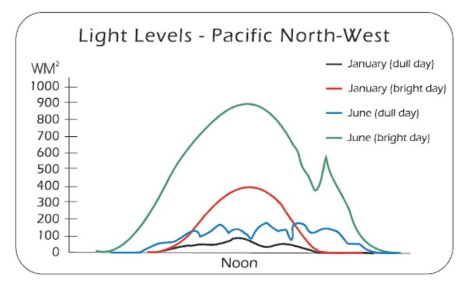
Types of Lamps
In lighting terminology, the word ‘lamp’ refers to the light bulb or tube, and the word luminaire refers to the entire light fixture: lamp + reflector + ballast + housing. When discussing and comparing light sources it is common to just refer to the lamp types. However, most specialized lamps require custom housings, ballasts, and reflectors. Consequently, for a given lamp type, there may be several configurations of luminaires available. Some are designed specifically for horticultural use, and others for different applications. It’s important to remember that the luminaire type, and the reflector design in particular, play a very important role in the horticultural effectiveness of the lamp.
A perfect artificial light source would provide 100% conversion of electrical energy into light, in a spectrum optimally balanced for plant growth. In reality, no such light source exists, not even the sun. Therefore, when evaluating artificial light sources, several factors and compromises must be taken into account. Lamp efficiency, life span, intensity, spectral quality, cost, and electrical requirements must be weighed against the crop demands and the intended application before choosing any supplemental or solar replacement source.
Conventional horticultural light sources can be grouped into three categories:
- Incandescent
- Fluorescent
- Discharge
INCANDESCENT LAMPS
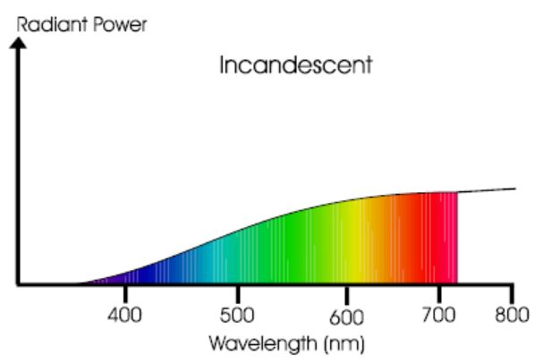
Incandescent lamps typically emit light as a result of the heating of a tungsten filament to about 2500oC. At this temperature, the emission spectrum from the filament includes a substantial amount of visible radiation. Only about 15% of the energy (watts) applied to an incandescent lamp is radiated in the PAR (photosynthetically active radiation) range of 400-700 nm. 75% is emitted as infrared (850-2700) nm, and the remaining 10% is emitted as thermal energy (> 2700 nm).
Since they are not very light efficient and they have a relatively short lamp life, incandescent lamps are usually not the most effective radiation sources for providing supplementary light for photosynthesis. They are, however, useful for phytochrome-dependent photoperiod control since they are relatively inexpensive to install and operate, they can be cycled on and off frequently, and they produce large amounts of red and infrared radiation. This is why incandescent sources are often the lamp of choice for night break, and long day lighting applications, particularly when other supplementary lighting sources are not installed.
Typically, incandescent lights are used to break the night into two or more short dark periods thereby stimulating a long day growth and development response in the crop. This may be used to promote flowering in long day species such as asters, azaleas, and fuchsias, or to delay flowering in short day species such as chrysanthemums, begonias, and poinsettias.
Since plant photoperiod response occurs under relatively low light intensities, less power is needed for photoperiod lighting than for supplemental lighting. The long standing recommendation for maintaining vegetative growth in chrysanthemum crops has been to place strings of 60 watt bulbs spaced 1.2 meters apart and suspend them 1.5 meters above the crop. This will provide sufficient photoperiod lighting for a 1.2 meter bed or bench. Similarly, any combination of incandescent lamp wattage, spacing, and mounting height that can produce an output of at least 10 foot-candles evenly on the crop will work. This corresponds to about 16 electrical input watts per square meter (rated bulb wattage divided by the area illuminated). Special reflector bulbs are available to focus most of the radiation downwards or do-it-yourself reflectors are often fashioned from aluminum foil pie plates.
FLUORESCENT LAMPS
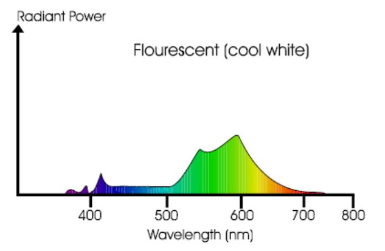
Unlike incandescent lamps, which emit light from the heating of a metal filament, fluorescent lamps produce light from the excitation of low pressure mercury vapor in a mixture of inert gases. A high voltage differential at the electrodes on opposite ends of the lamp tube produces an arc through the gas mixture exciting the mercury ions, which in turn emit short wavelength (primarily UV) radiation as they drop back to a ground state. Special fluorescent coatings on the glass tube walls are activated by this short wavelength radiation producing a discharge of visible spectrum radiation from the lamp. By altering the composition of the fluorescent coatings, variations in spectral output are accomplished.
Florescent lamps are more light efficient than incandescent lamps and they have a much longer life span. They also run cooler and produce a fairly balanced spectrum in the PAR range. They operate best in warm temperatures with peak light output occurring when the lamp wall reaches about 38oC . As the temperature decreases, light output falls dramatically to only 50% when the lamp wall temperature is 16oC. Light output also declines as fluorescent lamps age, falling to about 60% after 10,000 hours.
Fluorescent lamps are available in three load types: normal output 400 mA (normal output), 800 mA (high output), and 1500 mA (very high output).
One disadvantage of fluorescent lamps is their relative bulk in relation to output. Even the very high output fixtures and the new slimmer T8 tubes, when configured in sufficient densities for supplemental lighting, can cast considerable shadows that can interfere with ambient lighting. They are however, useful in growth chambers and particularly in multiple tier applications since their relatively cool operating temperatures allow them to be mounted in close proximity to plant surfaces.
Fluorescent lamps are available in a range of spectral qualities. Relatively inexpensive cool white lamps are fine for supplementary lighting, and ‘full spectrum’ lamps are available for replacement lighting applications.
HIGH INTENSITY DISCHARGE LAMPS (HID)
Modern high intensity discharge lamps are similar to fluorescent lamps in that they introduce an electrical arc into an elemental gas mixture. This produces a spectral discharge that is characteristic of the elements in the arc. However, they differ from fluorescent lamps in that no fluorescing powders are used on the lamp glass, and the elemental gases are heated under much higher vapor pressures and temperatures. The light intensities and efficiencies obtained by high intensity discharge are higher than either incandescent of fluorescent lamps. The two most common discharge lamps used in modern horticulture are metal halide and high pressure sodium lamps.
Metal Halide (MH)
Metal halide lamps use mercury vapor in a quartz arc tube and various iodide mixtures of sodium, thorium, or thallium. The electrical arc vaporizes the halides, heating them to a plasma state, whereupon they emit line spectra characteristic of the elements in the plasma. Metal halide lamps produce a relatively full spectrum of white light that is often preferable to the yellowish light of high pressure sodium when used in public or retail horticultural environments. They provide the best overall spectral distribution of all horticultural lamps, but are not quite as efficient in energy conversion as high-pressure sodium lamps in the PAR range, particularly in the yellow-red spectra.
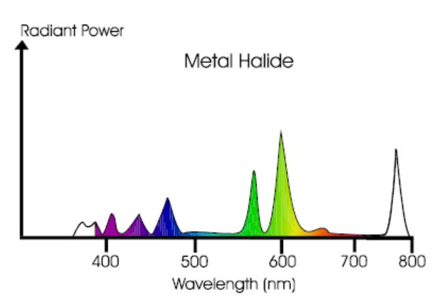
High Pressure Sodium (HPS)
High pressure sodium has become the most popular lamp type for commercial supplemental lighting in horticulture. They are the most efficient in the PAR range with the exception of low pressure sodium lamps which, although more efficient in their conversion of watts to lumens, produce a spectral distribution so narrow that they are of little horticultural use. High pressure sodium lamps produce light from an arc-induced discharge in a mixture of sodium vapor and mercury vapor. The emission spectra is highly concentrated in the yellow-orange-red range (500-650 nm) but is fairly low in the blue range. Used as a replacement light source, HPS lamps may require supplementation with fluorescent, mercury vapor, metal halide, or other light sources high in blue light. However, they are fine as a supplemental source since adequate amounts of blue light are usually available from ambient light to sustain blue-light-specific plant morphogenic responses.
HPS lamps have a long life, and are available in a range of wattage sizes as well as ballast/reflector configurations optimized for horticultural production.

Radiant Efficiency for Supplementary Irradiation
(adapted from Norton, 1972)
The following table summarizes the relative radiant efficiencies for the standard illumination sources used in horticulture.
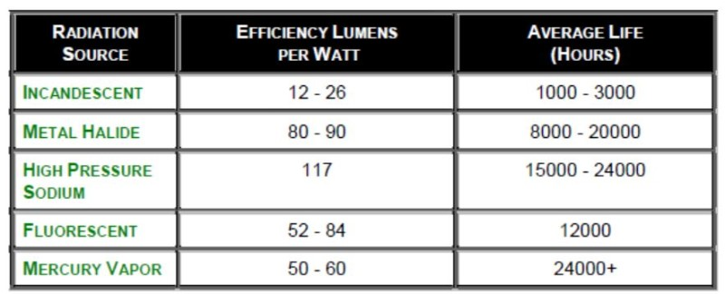
Luminaire Placement and Light Distribution Uniformity
The degree of growth uniformity in a crop is influenced directly by the uniformity of light falling onto the crop canopy. The manufacturers of horticulture luminaires often recommend specific grid and spacing patterns for various intensities and lighting configurations. These are determined by the specific lamp output, crop requirements, and luminaire reflector designs. Often, an overlapping pattern is designed with some additional modifications to lamp placement and density at the crop margins to produce the most uniform lighting over the entire cropping surface.
Supplementary Illumination Levels and Duration
It has long been accepted that it is more efficient to provide a lower amount of irradiation over a longer period than a high amount over a short period. For example, it is usually better to light a crop at 5 Wm-2 for 18 hours, than at 10 Wm-2 for 9 hours, provided there are no photoperiod requirement conflicts. Not only do the plants use the light more efficiently, but the total number of luminaires and electrical service loading can be reduced, thereby reducing capital investment costs.
It has also been shown that the maximum incremental benefit of supplementary illumination occurs when the plants are lit beyond the daylight period, so lighting at night is generally more effective than lighting during the day period. During periods of low ambient light levels, it is a common strategy to light during the day wherever levels fall below a predetermined set point, and to extend the lighting duration period to the maximum recommended for the crop. For example, cucumbers and roses can be lighted for 24 hours per day, while tomatoes and most bedding plants should only be lit for 16 – 18 hours to avoid problems with flower delay.
In greenhouses, supplementary light levels have been suggested ranging from 3 W m-2 for ferns and other low light crops, to 20 W m-2 for vegetable crops and propagation areas.
Typical Supplementary Illumination Treatments
for Commercial Greenhouse Crops (various sources)
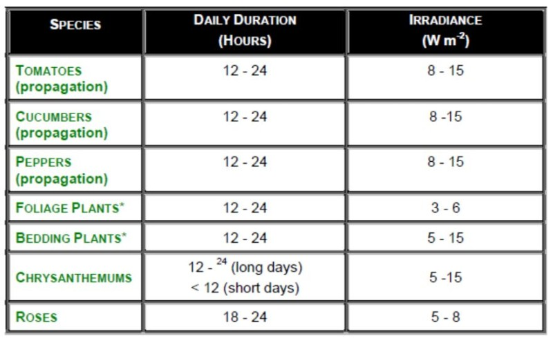
Green: duration varies with species
GREENHOUSE LOCATION, STRUCTURES AND COVERINGS
All greenhouse coverings and their respective support members restrict available light. In addition, the orientation, configuration, and roof angle of greenhouse structures influence the overall percentage of sunlight that is available for crops inside. The seasonal changes in sun angle increase with the distance from the equator. Therefore, greenhouse structures optimized for one latitude may not be ideal in another. Other sources of light loss include various crop support mechanisms, overhead shading and blackout systems, fans and air tubes, and luminaires. The accumulation of pollutants and other particulates on glazing surfaces, and the reduced transparency of certain greenhouse coverings as they age can all contribute to light loss.
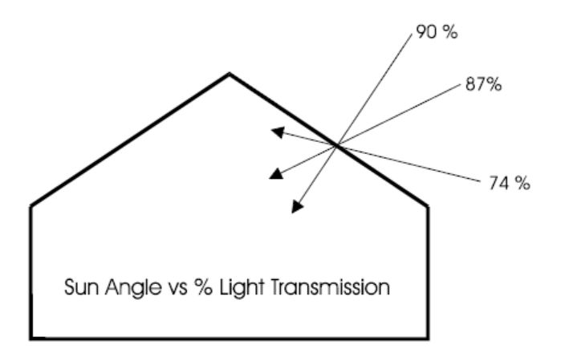
Characteristics of Typical Greenhouse Covering Materials
(from various sources)
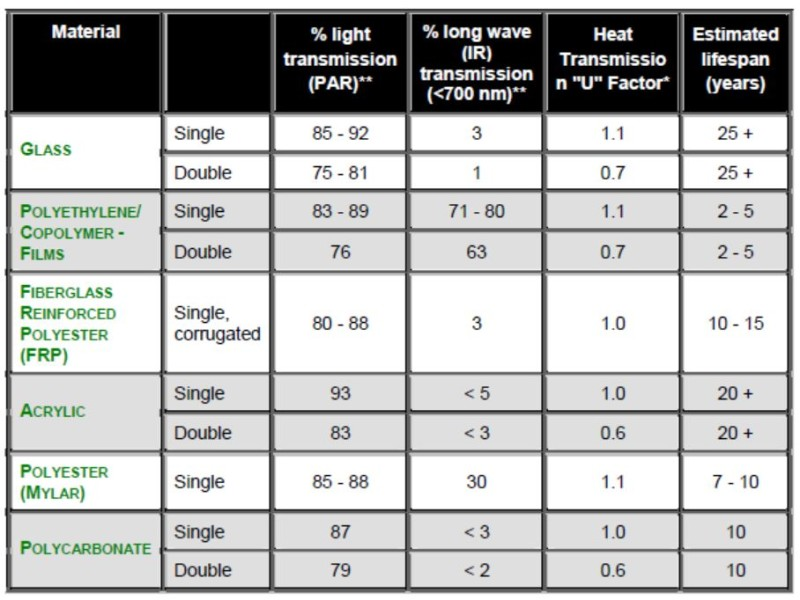
* U = BTU/sq ft – oF – hr
** Transmission values are for dry covering materials. Condensation will reduce overall light transmission and long wave transmission.
LIGHT CONTROL IN GREENHOUSES
Although the sun’s spectral quality is constant, it is highly variable in intensity, duration (daily and seasonal), and direction. Many strategies, including shading and supplemental illumination systems, have been developed to deal with the undesirable indoor production conditions associated with light fluctuation.
Sunlight conditions in greenhouses can vary rapidly, affecting temperature, humidity, and illuminance. To compensate, greenhouse ventilation, heating, shading, irrigation, humidification, and lighting equipment must be reasonably responsive to these fluctuations if a controlled growing environment is to be achieved. This requires good engineering and the proper selection of equipment and control devices. It also requires an understanding of the capabilities and limitations of the greenhouse equipment systems, sensors, and controllers.
Most integrated environmental control equipment is capable of making nearly instantaneous adjustments to equipment in response to changing sensor information, predictive algorithms, and programmed logic responses. In general, automated controllers are far faster at telling the equipment components what state they should be in than the equipment is capable of responding. Even if the equipment could respond instantly it would seldom be beneficial to do so since excessive on/off cycles can limit the life of motors, switch gear, and light fixtures. Properly tuned integrated climate control systems respond to changes in the environment in a dampened or attenuated fashion that strikes a balance between the need to maintain set points, and the need not to overtax equipment nor overshoot the degree of response.
Control over how much light a greenhouse crop receives can be influenced by two principle methods: shading and supplementary illumination.
Shading Control
For full-sun tolerant crops such as tomatoes, cucumbers, and chrysanthemums, shading is never required to limit PAR levels. Properly acclimatized, these crops are perfectly capable of withstanding and utilizing the full power of the sun. However, there is often a need to provide shade as a means of limiting heat buildup in the greenhouse air and on leaf surfaces. Also, some internal shade systems, if carefully used, can be partially effective in helping to lower vapor pressure deficit on bright, hot days. For low light crops, and special applications such as rooting cuttings, shade is used as a necessary means of limiting total solar radiation.
The oldest methods of shading involve the application of semi-opaque materials to the glazing either as liquid coatings or in the form of fabric screens. External shading has the advantage of absorbing and reflecting light energy before it enters the enclosed greenhouse, heating the air and all enclosed objects. The disadvantages of external shade methods are that the coatings are semi-permanent (they must be washed away), and externally mounted retractable screens are expensive to construct and maintain due to wind and weather considerations.
Internal screen systems are effective in reducing the light levels falling onto plant surfaces, but they do little to limit heat buildup within the greenhouse enclosure. However, since much of the light energy conversion to heat takes place above the screens it can quickly be exchanged with cooler outside air in greenhouses that are roof ventilated. Although some heat accumulation occurs under the screens as well (in inverse proportion to the % shade), the warmed air can rise through the screens if they are sufficiently porous, or, in the case where nonporous screens are used, gaps must be left to allow for roof-vented air exchange. Nonporous screens can be completely closed when sidewall ventilation is used under them.
When motorized retractable shade screens are used, it is possible to automate their deployment. Some typical control parameters that can be used to operate shading equipment include:
- Time (absolute or relative to day length and season)
- Global light (from outdoor sensors)
- Temperature (outdoor and/or indoor)
- Humidity (set points)
- Photoperiod programming (for blackout screens)
Other parameters that may be used to control the behavior of shading devices include staged opening and closing strategies, special overrides for events such as snowfall, spraying operations, and synchronization with heating, venting, humidity control, and CO2 supplementation. The most flexible control programs allow for the integration of several parameters at once. For instance, a shade system might be programmed to operate as follows:
1 Open in stages starting 30 minutes before dawn. (timed mode).
2 Close completely 30 minutes after dusk. (timed mode).
3 Close immediately, leaving a 10% gap for air exchange if the outdoor light levels exceed 600 W m-2 (light mode to help prevent injury to sensitive crops).
4 If light levels fall below 400 W m-2 for more than 20 minutes, reopen. (light mode to help prevent rapid cycling of equipment on partially cloudy days).
5 Close if compartment temperatures fall 5oC below the heating set point (temperature mode safety override)
6 If compartment temperatures exceed 35oC, close leaving a 10% gap (temperature mode safety override)
7 Open at any time, regardless of climate temperature if snow is detected (safety override to prevent snow loading).
Most curtain systems are fairly slow to fully close or open. This lag time can be a problem for sensitive crops that could be damaged if exposed for even a few minutes to bright sunlight. If the sun suddenly appears from behind dark clouds, it may take several minutes for the curtains to fully close. In these cases it is better not to rely upon shade curtains alone for protection. Fixed screens, overhead mist or sprinkler systems timed for such events, or an application of shading compound on the roof may provide an additional safety margin.
When curtains are used for energy conservation, it is possible for cold air to accumulate between them and the greenhouse roof during cold weather. At such times it is best to gradually stage their curtain opening to reduce the shock of cold air spilling onto the crop.
Supplemental Illumination Control
Lighting systems can be operated automatically using simple time clocks or sophisticated integrated controllers. Some greenhouses with large installations may not have sufficient electrical service to operate all of their lights at the same time, so they may need to be staged in accordance with available electrical power. When integrated controllers are used it is possible to control the operation of supplemental light systems by a number of parameters including:
- Time – cyclical lighting (for photoperiod control) – supplemental lighting duration control
- Light – integrated daily light levels – instantaneous radiation set points
- CO2 synchronization
Cyclical lighting is normally only used with incandescent lamps only to provide photoperiod control by cycling a series of relatively short duration lighting periods in the night. By using this method, it is possible to use less overall illumination time and electricity consumption than with conventional long day illumination. It is not recommended for use with HID lighting, since these luminaires are not designed for frequent cycling.
For supplemental lighting, regardless of the control method, it is best to operate the lights for extended periods, since short cycling of these luminaires will greatly reduce the lamp and ballast life. Therefore, when setting up programs based on available instantaneous or accumulated light energy it is best to set up some conditions that prevent cycling.
These can include a proving time, where the need for either turning the lights on or off must be sustained for a desired period. This prevents the lights from cycling on and off in partially cloudy weather. Another method of preventing cycling when using light based control is to provide for a minimum on and off time override.
A typical integrated control strategy for HID lighting operation might include the following:
1 Lighting window - allow the light to be turned on between 5:00 am and 10:00 pm.
2 Lighting set point – allow lights to be turned on during the lighting window period if light levels are below 200 Wm-2.
3 Light accumulation – turn off lights (or don’t allow them to be turned on) if the daily accumulated light exceeds 5.0 kWh.
4 Proving time – light levels must be below the lighting set point for 30 minutes.
5 Minimum on time – once the lights are turned on, to prevent cycling, they must remain on for 2 hours, regardless of other conditions.
The above strategy sets up a basic time window for supplementary lighting (5:00am to 10:00pm). It then defines some light-based conditions to economize on lamp use. First, it must be sufficiently dark for the lights to turn on, and second, once a daily level of natural lighting has been accumulated (as measured by the outdoor pyranometer sensor), the lights will be switched off and not allowed to turn on again until following day. A light proving time and a minimum on time are used as overrides to guard against lamp cycling.
Other additional strategies could be used alone or in conjunction with the above illustration. For instance, to get the maximum value from CO2 supplementation it is necessary to have adequate light levels. A separate program could be set up to ensure that crops always receive a minimum light level during CO2 supplementation periods.
SUMMARY
Although light is fundamental to greenhouse production, it is one of the most variable inputs, and one of the most challenging and expensive to regulate. Light requirements and the climatic effects of light must be considered at all stages of greenhouse design and orientation. Crop production and environmental control strategies must be employed to maximize the benefits of light while mitigating the negative consequences associated with natural light variability.
ARGUS CONTROL SYSTEMS LTD.
1281 Johnston Road
White Rock, British Columbia
Canada V4B 3Y9
Telephone: +1 (604) 536-9100
Toll Free: 1-888-667-2091 (North America)
Fax: +1 (604) 538-4728
Internet Email: argus@argus-controls.com
World Wide Web: http://www.argus-controls.com
Information in this manual is subject to change without notice.
Copyright 2010 Argus Control Systems Ltd. Printed in Canada
Argus is a registered trademark of Argus Control Systems Ltd.